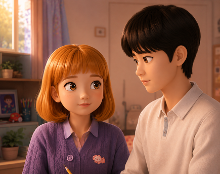
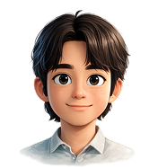
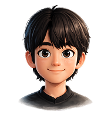
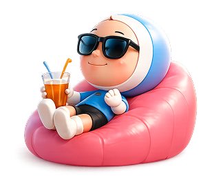

설렘의 시작
유미를 처음 만난 투근투근한 순간

사랑하고, 흔들리고, 성장했던
유미와 세포들의 시간을 따라가 보세요.
설렘, 이별, 성장
그 모든 감정의 순간들
유미를 처음 만난 투근투근한 순간

서로의 마음이 엇나가기 시작했다

쉽지 않았던 우리의 헤어짐
자라나는 꿈을 함께 한 걸음씩
또 다른 이야기의 시작


따뜻하고 솔직한 유미의 첫 인연

다정한 매력으로 유미 곁을 지킨 사람
사랑하고, 고민하고,
성장하는 우리의 주인공
조용히 깊게 유미를 이해한 사람
글 쓰는 꿈을 향해 나아가는 유미
유미의 세포들이 전하는 솔직하고 귀여운 한마디.
